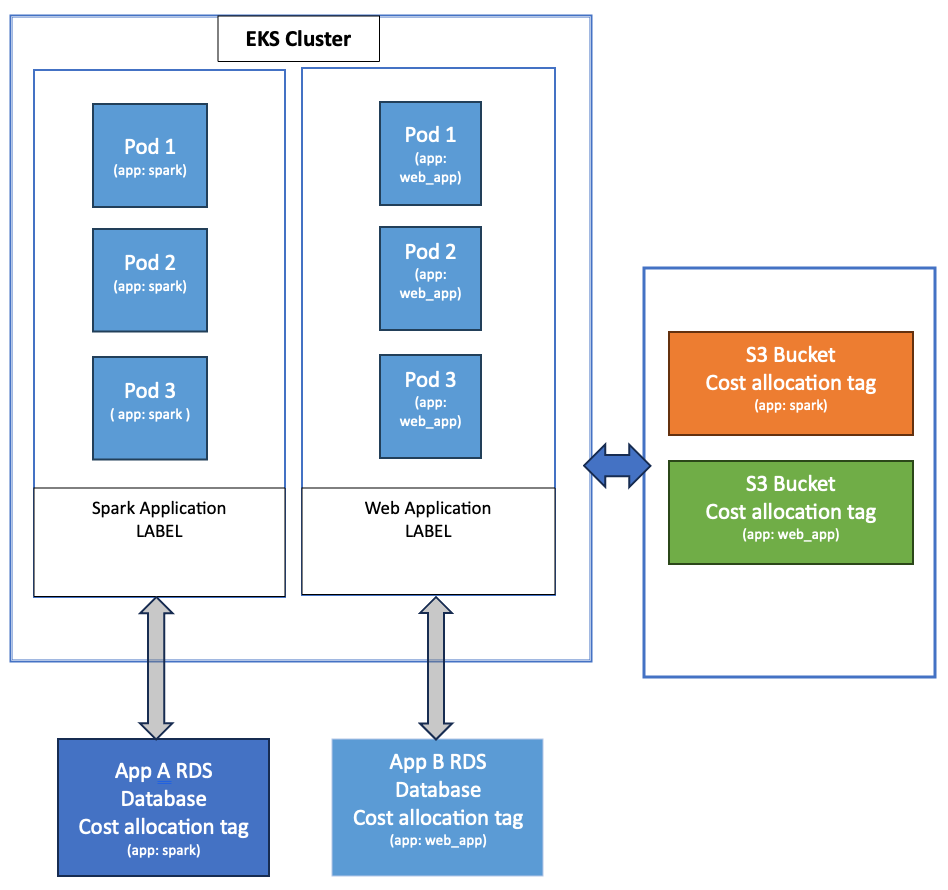

EKS networking is deceptively complex. On the surface, it "just works" — pods get IPs, services resolve, traffic flows. But underneath, the AWS VPC CNI plugin is doing something fundamentally different from what most Kubernetes CNI plugins do, and understanding that difference is critical when you hit scaling limits, IP exhaustion, or need to implement network security.

This article is everything I've learned running EKS clusters in production for 4 years — from the basics of how VPC CNI assigns IPs, to the incident where we ran out of IPs in a /24 subnet during a Black Friday scale-up and had to emergency-migrate workloads at 2 AM.
How VPC CNI Actually Works
Most Kubernetes CNI plugins (Flannel, Calico in overlay mode, Weave) create a virtual network overlay. Pods get IPs from a virtual address space that only exists inside the cluster. Traffic between pods is encapsulated (VXLAN, IP-in-IP) and routed through the overlay.
The AWS VPC CNI plugin does something different: every pod gets a real, routable VPC IP address. There's no overlay. When pod A (10.0.1.47) talks to pod B (10.0.2.83), the traffic goes directly through the VPC network — same as EC2-to-EC2 traffic. This has major implications:
- Pods are directly reachable from any VPC resource (EC2, RDS, Lambda) without any proxy or gateway
- VPC Flow Logs capture pod-level traffic with real IPs
- Security Groups can be applied directly to pods
- AWS networking features (PrivateLink, Transit Gateway, VPC Peering) work with pod IPs natively
- Every pod consumes a real IP from your VPC CIDR — IP exhaustion is a real problem
- ENI limits per instance type cap how many pods a node can run
- Subnet sizing becomes a critical capacity planning exercise
The ENI and IP Allocation Mechanism
Here's how VPC CNI allocates IPs under the hood:
The formula for maximum pods per node is: (Number of ENIs × IPs per ENI) - Number of ENIs. We subtract the ENI count because each ENI's primary IP is reserved for the ENI itself.
ENI Limits Per Instance Type
This table is the single most important reference for EKS capacity planning. The number of pods you can run is hard-limited by the instance type:
| Instance Type | Max ENIs | IPs per ENI | Max Pods (default) | Max Pods (prefix delegation) |
|---|---|---|---|---|
| t3.medium | 3 | 6 | 17 | 110 |
| t3.xlarge | 4 | 15 | 58 | 110 |
| m5.large | 3 | 10 | 29 | 110 |
| m5.xlarge | 4 | 15 | 58 | 110 |
| m5.2xlarge | 4 | 15 | 58 | 110 |
| m5.4xlarge | 8 | 30 | 234 | 250 |
| c5.2xlarge | 4 | 15 | 58 | 110 |
| r5.2xlarge | 4 | 15 | 58 | 110 |
| m5.8xlarge | 8 | 30 | 234 | 250 |
A t3.medium can only run 17 pods. That includes kube-proxy, aws-node (VPC CNI), CoreDNS, and any DaemonSets. After system pods, you might only have capacity for 10-12 application pods. We've seen teams use t3.medium for "cost savings" and then wonder why pods are stuck in Pending. Use at least m5.large for production workloads.
The IP Exhaustion Problem
This is the #1 operational issue with EKS networking. Because every pod gets a real VPC IP, a cluster with 500 pods needs 500 IPs. A /24 subnet only has 251 usable IPs (256 minus 5 reserved by AWS). You can see where this goes.
The math gets worse when you account for the warm IP pool. VPC CNI pre-allocates IPs to reduce pod startup latency. By default, it keeps WARM_IP_TARGET=1 spare IP per node, but it allocates IPs in ENI-sized chunks. A node with 4 ENIs × 15 IPs/ENI might have 60 IPs allocated even if only 20 pods are running.
Solution 1: Prefix Delegation
Prefix delegation is the most impactful solution. Instead of allocating individual /32 IPs to ENIs, VPC CNI allocates /28 prefixes (16 IPs each). This dramatically increases the number of IPs available per ENI without consuming more ENI slots:
# Enable prefix delegation on the VPC CNI DaemonSet
kubectl set env daemonset aws-node \
-n kube-system \
ENABLE_PREFIX_DELEGATION=true \
WARM_PREFIX_TARGET=1
# Or in your EKS Terraform module
resource "aws_eks_addon" "vpc_cni" {
cluster_name = aws_eks_cluster.main.name
addon_name = "vpc-cni"
configuration_values = jsonencode({
env = {
ENABLE_PREFIX_DELEGATION = "true"
WARM_PREFIX_TARGET = "1"
}
})
}Impact: With prefix delegation, an m5.xlarge goes from 58 max pods to 110 max pods (Kubernetes default limit). The IPs come from /28 prefixes, so you're allocating 16 IPs at a time instead of 1. This is more IP-efficient at scale because there's less waste from warm pools.
Solution 2: Custom Networking
Custom networking lets you use a separate, larger CIDR range for pod IPs while keeping node IPs in the original VPC CIDR. This is the solution when your VPC CIDR is too small to accommodate pod IPs:
# Enable custom networking
kubectl set env daemonset aws-node \
-n kube-system \
AWS_VPC_K8S_CNI_CUSTOM_NETWORK_CFG=true
# Create ENIConfig for each AZ pointing to the larger pod subnets
apiVersion: crd.k8s.amazonaws.com/v1alpha1
kind: ENIConfig
metadata:
name: us-east-1a
spec:
subnet: subnet-0abc123def456 # Pod subnet in us-east-1a (e.g., /19)
securityGroups:
- sg-0abc123def456
---
apiVersion: crd.k8s.amazonaws.com/v1alpha1
kind: ENIConfig
metadata:
name: us-east-1b
spec:
subnet: subnet-0def456abc789 # Pod subnet in us-east-1b (e.g., /19)
securityGroups:
- sg-0abc123def456With custom networking, nodes get IPs from the original VPC CIDR (e.g., 10.0.0.0/16) and pods get IPs from a secondary CIDR (e.g., 100.64.0.0/16). The secondary CIDR can be much larger, solving the IP exhaustion problem entirely.
With custom networking enabled, the primary ENI is no longer used for pod IPs — only for the node's own IP. This means you lose one ENI's worth of pod capacity per node. On an m5.large, max pods drops from 29 to 19. Combine with prefix delegation to offset this.
Security Groups for Pods
One of the most powerful EKS features is the ability to assign VPC Security Groups directly to pods. This means you can use the same security group rules you use for EC2 and RDS to control pod-level network access.
# SecurityGroupPolicy — assigns SGs to pods matching the selector
apiVersion: vpcresources.k8s.aws/v1beta1
kind: SecurityGroupPolicy
metadata:
name: payment-service-sg
namespace: production
spec:
podSelector:
matchLabels:
app: payment-service
securityGroups:
groupIds:
- sg-0abc123def456 # Allows access to RDS
- sg-0def789abc012 # Allows access to ElastiCacheThis is significantly more powerful than node-level security groups. Without pod-level SGs, every pod on a node shares the node's security group. If the node SG allows access to RDS, every pod on that node can reach RDS — even pods that shouldn't.
How it works under the hood: When a pod matches a SecurityGroupPolicy, VPC CNI creates a dedicated branch ENI for that pod and attaches the specified security groups to it. The pod's traffic flows through this branch ENI instead of the node's shared ENI.
Security Groups for Pods uses branch ENIs, which have their own limits per instance type. An m5.large supports up to 9 branch ENIs. If you have more pods needing custom SGs than branch ENI slots, pods will be stuck in ContainerCreating. Check limits with: aws ec2 describe-instance-types --instance-types m5.large --query "InstanceTypes[].NetworkInfo.MaximumNetworkInterfaces"
Network Policies: Calico vs Cilium vs VPC CNI
By default, EKS has no network policies — every pod can talk to every other pod. In production, that's unacceptable. You need network policies to enforce least-privilege network access. Here's how the three main options compare:
| Feature | Calico | Cilium | VPC CNI Network Policy |
|---|---|---|---|
| Implementation | iptables/eBPF | eBPF | eBPF (native VPC CNI) |
| K8s NetworkPolicy | Full support | Full support | Full support |
| Extended policies | Calico GlobalNetworkPolicy | CiliumNetworkPolicy | None |
| DNS-based policies | Yes (Enterprise) | Yes (FQDN rules) | No |
| L7 policies (HTTP) | Yes (Enterprise) | Yes | No |
| Performance overhead | Low (eBPF) / Medium (iptables) | Low | Low |
| Observability | Flow logs | Hubble (excellent) | VPC Flow Logs |
| Managed by AWS | No | No | Yes |
| Best for | Mature teams, hybrid clouds | Advanced networking, observability | AWS-native, simplicity |
We use VPC CNI network policies for standard Kubernetes NetworkPolicy enforcement (it's built into the CNI addon since v1.14) and supplement with Calico for GlobalNetworkPolicy when we need cluster-wide default-deny rules.
Real Network Policy Examples
Default Deny All Ingress
The first policy you should apply to every namespace. Deny all ingress by default, then explicitly allow what's needed:
apiVersion: networking.k8s.io/v1
kind: NetworkPolicy
metadata:
name: default-deny-ingress
namespace: production
spec:
podSelector: {} # Applies to ALL pods in the namespace
policyTypes:
- Ingress
# No ingress rules = deny all ingressAllow Only From Same Namespace
apiVersion: networking.k8s.io/v1
kind: NetworkPolicy
metadata:
name: allow-same-namespace
namespace: production
spec:
podSelector: {}
policyTypes:
- Ingress
ingress:
- from:
- podSelector: {} # Any pod in the same namespaceAllow Specific Port From Specific Service
apiVersion: networking.k8s.io/v1
kind: NetworkPolicy
metadata:
name: allow-api-to-db
namespace: production
spec:
podSelector:
matchLabels:
app: postgres
policyTypes:
- Ingress
ingress:
- from:
- podSelector:
matchLabels:
app: api-server
- podSelector:
matchLabels:
app: migration-job
ports:
- protocol: TCP
port: 5432This is the most common mistake. In the from array, each item is OR'd. Within a single item, podSelector and namespaceSelector are AND'd. The policy above allows traffic from pods labeled app: api-server OR pods labeled app: migration-job. If you put both selectors in the same from item, it would mean pods that match BOTH labels (which probably don't exist).
Troubleshooting EKS Network Issues
When networking breaks in EKS, here are the tools and techniques that actually help:
tcpdump Inside a Pod
# If the pod has tcpdump installed
kubectl exec -it pod-name -- tcpdump -i eth0 -nn port 5432
# If it doesn't (most production images don't), use an ephemeral debug container
kubectl debug -it pod-name --image=nicolaka/netshoot --target=app-container
# Inside the debug container
tcpdump -i eth0 -nn host 10.0.2.45 and port 5432
# Check DNS resolution
nslookup postgres-service.production.svc.cluster.local
# Test connectivity
curl -v telnet://postgres-service:5432Checking conntrack and iptables
# SSH to the node (or use SSM Session Manager)
# Check conntrack table for connection tracking issues
conntrack -L | grep 10.0.1.47
conntrack -S # Show conntrack stats — look for "drop" and "insert_failed"
# Check iptables rules (kube-proxy and network policies)
iptables -t nat -L KUBE-SERVICES -n | grep my-service
iptables -L -n | grep -A5 "KUBE-NWPLCY"VPC CNI Diagnostics
# Check VPC CNI logs
kubectl logs -n kube-system -l k8s-app=aws-node --tail=100
# Check IP allocation on a specific node
kubectl exec -n kube-system aws-node-xxxxx -- /opt/cni/bin/aws-cni-support.sh
# Check ENI allocation
aws ec2 describe-network-interfaces \
--filters "Name=attachment.instance-id,Values=i-0abc123" \
--query "NetworkInterfaces[].{ENI:NetworkInterfaceId,IPs:PrivateIpAddresses[].PrivateIpAddress,SubnetId:SubnetId}" \
--output tableThe Incident: Running Out of IPs in a /24 Subnet
Black Friday, 11 PM. Our HPA started scaling up pods to handle the traffic surge. Pods went to Pending. The error: failed to assign an IP address to container.
We had 3 subnets, each a /24 (251 usable IPs). Our cluster had grown to 45 nodes across 3 AZs. With VPC CNI's warm pool, each node had pre-allocated ~20 IPs. That's 45 × 20 = 900 IPs needed, but we only had 753 available across all subnets. The warm pool had consumed IPs that weren't even assigned to pods yet.
T+0:00 — Pods stuck in Pending
HPA triggers scale-up. New pods can't get IPs. kubectl describe pod shows: failed to assign an IP address to container.
T+0:05 — Identified as IP exhaustion
Checked VPC CNI logs: ipamd: no available IP addresses. Confirmed subnet utilization at 98%.
T+0:15 — Emergency: reduce warm pool
Set WARM_IP_TARGET=1 and MINIMUM_IP_TARGET=2 to release pre-allocated IPs. Freed ~200 IPs across the cluster.
T+0:20 — Pods scheduling again
Freed IPs allowed pending pods to schedule. Traffic handled. Crisis averted.
Next week — Permanent fix
Added secondary CIDR (100.64.0.0/16) to VPC. Created /19 pod subnets (8,187 IPs each). Enabled custom networking + prefix delegation. Never hit IP limits again.
Lesson learned: Monitor your subnet IP utilization. We now have a CloudWatch alarm that fires when any subnet drops below 20% available IPs. The metric comes from a Lambda that runs every 5 minutes and calls describe-subnets to check AvailableIpAddressCount.
Key Takeaways
- VPC CNI gives pods real VPC IPs. This is powerful for integration with AWS services but means IP exhaustion is a real operational concern.
- Enable prefix delegation. It's the single most impactful change for IP efficiency and pod density.
- Size your subnets for pods, not nodes. A /24 is almost never enough. Use /19 or larger for pod subnets.
- Use Security Groups for Pods for workloads that need direct access to RDS, ElastiCache, or other VPC resources. It's more secure than node-level SGs.
- Apply default-deny network policies to every namespace. Then explicitly allow required traffic.
- Monitor subnet IP utilization. Set alarms at 80% usage. You don't want to discover IP exhaustion during a traffic spike.
- Know your ENI limits. The instance type determines your max pod count. Choose instance types based on pod density needs, not just CPU/memory.
"EKS networking is simple until it isn't. The difference between a smooth scaling event and a 2 AM emergency is whether you planned for IP capacity the same way you plan for CPU and memory."